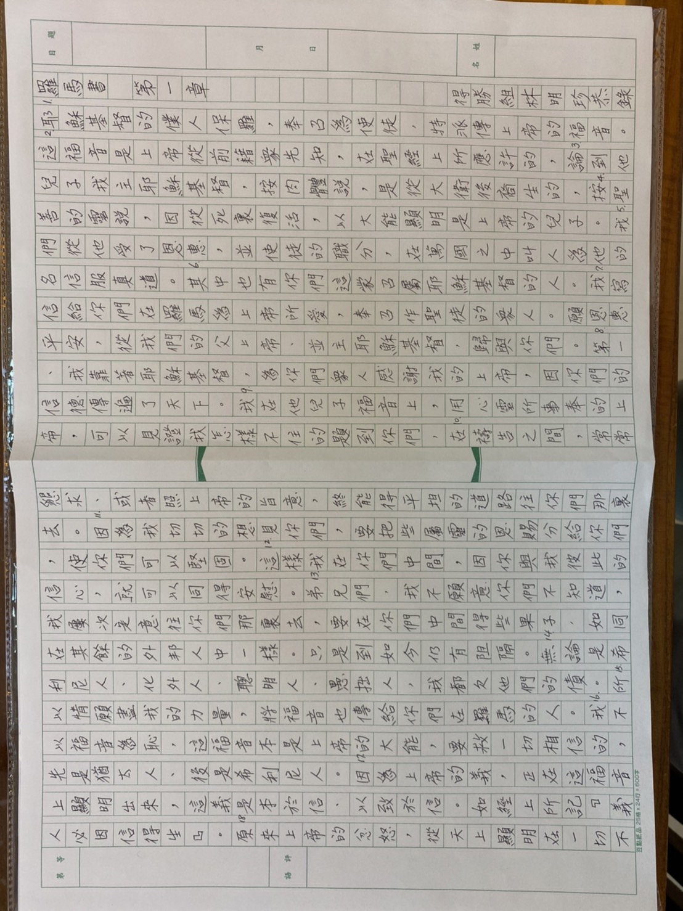

台灣信義會靈糧堂慶祝建堂 60 週年 「手抄聖經」說明
一、期待達成的效益：
1、歷史意義：今(2021)年適逢本教會建堂 60 週年，藉全體會眾合力完成手抄聖經，表明遵守聖經教導核心價值。
2、聯誼效益：促進信徒互動，接力同心完成抄錄聖經，共築一個本教會歷史文物。
二、期程：2021 年 9 月20日起至 11 月 30 日止
三、參與成員： 所有本教會會友(含牧者)，鼓勵把握機會參與抄寫。
四、抄寫格式及工具：
1、確定聖經版本為聖經公會「和合本(上帝字版)」。
2、一律使用 0.5 mm、油性黑筆(筆、稿紙由教會提供)。
3、以「正楷書」書寫，不要用簡體字，並標上節數、標點符號。
4、每人以抄寫一章為原則，各領取一份5張(10頁)稿紙，每張首尾各預留一行以利裝訂，首頁第二行起頭請寫卷名章數，同行下方請寫「○○組○○○恭錄」。
5、若有筆誤，可用「修正帶」修改(勿使用「修正液」)，但每張修改以不超過 5 處為宜。
6、紙張請於中線整齊對折，並保持清潔，於完成後交回教會(張馨文幹事)。
五、認領段落原則：
依各區、組估計可參與抄錄人數，牧師選定聖經創世記、約翰福音、羅馬書、啟示錄四卷共109章供接力抄錄，以小組為單位認領抄寫範圍。
六、其他：
1、開始抄寫前先洗手(保持紙張乾淨)、感謝禱告。 累了就休息，不要勉強抄寫，以減少錯誤機會。
2、抄寫人於完成每一張後，應先自行校對是否有錯誤處，並更改之。
3、抄寫用紙、筆及用完(或遺失、損壞) 不足時，請洽小組長、幹事等同工即時補換。
樣本

真心話分享
請使用高畫質手機或相機橫向拍攝15秒鐘（以內）的影片。透過選取的問題，來跟我們分享這個「家」的故事。
期程：2021 年 9 月20日起至 11 月 14 日止
題目：
- 你對教會的深刻印象
- 教會的挑戰或困難
- 你最喜歡教會的什麼？
- 最感恩的事
- 最喜歡的經文
- 給教會的祝福
錄好的影片請交給小組長, 再統一給洪迎嘉執事.